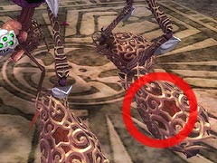
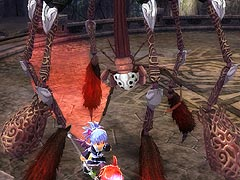
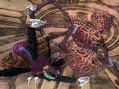
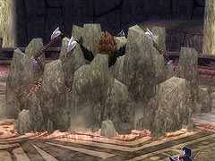
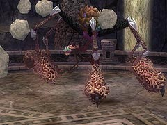
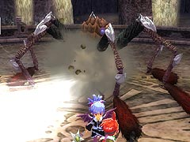
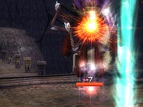
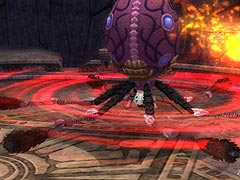
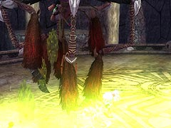

目次 > ゲームについて > 日本Falcom 攻略 > ZWEI II > ボス戦 > アークシェロブ
らんの眼
ZWEI II (ツヴァイ 2、ZWEI II Plus)
| 概要 | 情報 | 攻略チャート |
| フード交換 | ペットについて | ボス戦 |
| 敵キャラ一覧 | ハンターランク | G-コロッセオ |
| アイテム一覧 | ガジェット一覧 | トレジャー一覧 |
| ダンジョン一覧 | クリアデータ特典 | Plusの追加要素 |
| ZWEI II攻略へ | 目次へ戻る |
| アークシェロブ前半 |
|  はじめはラグナの出番です。上の画像の赤い○の位置、つまり足の先端を覆っているよく分からないものを壊してください。  ただし、足を上下させて衝撃波を出して攻撃してくるので、上に上げた足の側にいると危険です。他にも、顔の側に付いている短い腕ではたいてきたりします。 一つ目の足を覆っている部分を壊すと、アークシェロブがバランスを崩し転びます。この間はこちらが一方的に攻撃できるチャンスです。 それ以降も、足を覆っている部分を壊すとランダムで転びますが、本当にランダムなので過度な期待は禁物です。   また、アークシェロブから距離を取っていると、ジャンプした後に岩を出してくる攻撃をしてきます。これは、離れていれば簡単によけられるはずです。 このジャンプして岩を出す攻撃は、2 種類あり、普通のジャンプの場合は単によければいいのです。しかし、空中で一回転する場合は主人公の真上に着地し、アークシェロブの真下のみが安全地帯となるので、ジャンプしたときの動きに注意してください。。  他に、岩を投げてくる攻撃がありますが、これもじっとしていなければほぼよけられます。 |
| アークシェロブ後半 |
| 足についているよく分からない物を壊した後は、アルウェンの出番です。  アークシェロブが空気を吸って体をふくらませ、空中から攻撃してきます。  アークシェロブが宙に浮くので、アルウェンの魔法の方がダメージを与えやすいです。魔法ボタンを押しっぱなしにして、アークシェロブの周辺を移動していれば、ダメージは与えられます。 アークシェロブは三日月型の衝撃波を撃ってくるのですが、この衝撃波は追尾してくるので、直線的に逃げているだけだと高い確率で攻撃を食らってしまいます。  また、足を回転させながら突進もしてきます。この最中はいっさいの攻撃が通じないので、ひたすら逃げるしかありません。  他にも、黄色い毒液をまく攻撃があります。これは、大きく円を描くように逃げれば特に問題ありません。 |
| 概要 | 情報 | 攻略チャート |
| フード交換 | ペットについて | ボス戦 |
| 敵キャラ一覧 | ハンターランク | G-コロッセオ |
| アイテム一覧 | ガジェット一覧 | トレジャー一覧 |
| ダンジョン一覧 | クリアデータ特典 | Plusの追加要素 |
| ページの上部へ | ZWEI II 攻略へ | 目次へ戻る |